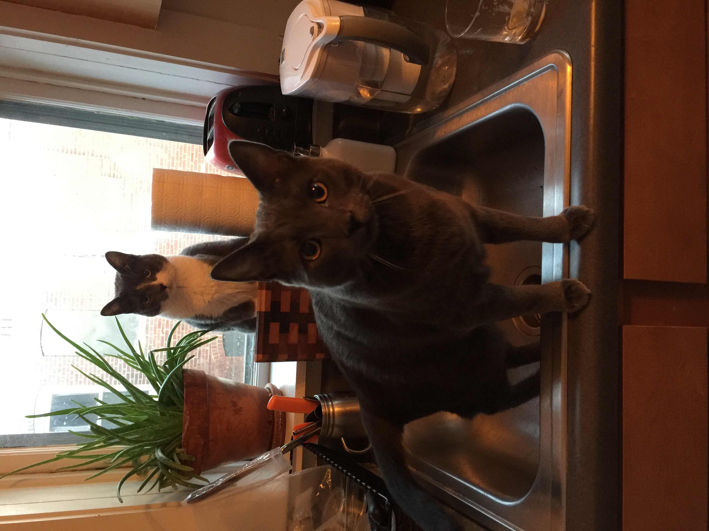

Manya
Manya was born in a small town in Michigan's Upper Peninsula to a wily all-grey
father and a brooding all-white mother. They were both smaller than the average
cat, and smarter, with many many projects of their own. Unfortunately, like most parents,
they were sad and broken, and couldn't care for Manya the way she would have liked.
She escaped their blistery home one winter morning (it is often
winter in Michigan's UP) and found her way to a homeless shelter named
UPAWS.
Manya was well-cared-for at UPAWS; she was fed pumpkin and tender meats,
given a room of her own with her own litter tray, and was allowed to play
with any volunteer with whom she wanted to play. Unfortunately, none of the volunteers
spoke UP Cat (a particular dialect of Cat) so while she tried to tell them her name
was Marvelous Moxie, they called her Marie Curie, a common misunderstanding.
Alex
Alex was also born in a small town in Michigan's Upper Peninsula. His mother was
a black bear and his father an exceedingly rare land seal. Although the particulars of their
relationship have been lost in Lake Superior's waters, they seemed to have
met in a bar called Crossroads after Alex's mother spent the day ice fishing and
Alex's father exploring on his snow machine.
The partnership between a black bear and a land seal was destined to be short-lived,
and soon after Alex's mother ate his father, she surrendered him to UPAWS as part of
their Safely Surrenderd Baby Program.
And this, dear reader, is where their story gets really interesting.
Or, as the Frenchie Cats say, "Cette histoire est incroyable! Génial!"
Keep Reading
More information on the elusive land seal.
Support UPAWS or your local cat shelter.
Learn another language, you stupid American.
Book Us
For bookings, conference appearances, cat therapy, photo
shoots: andrea[at]catsoftheinternet[dot]com